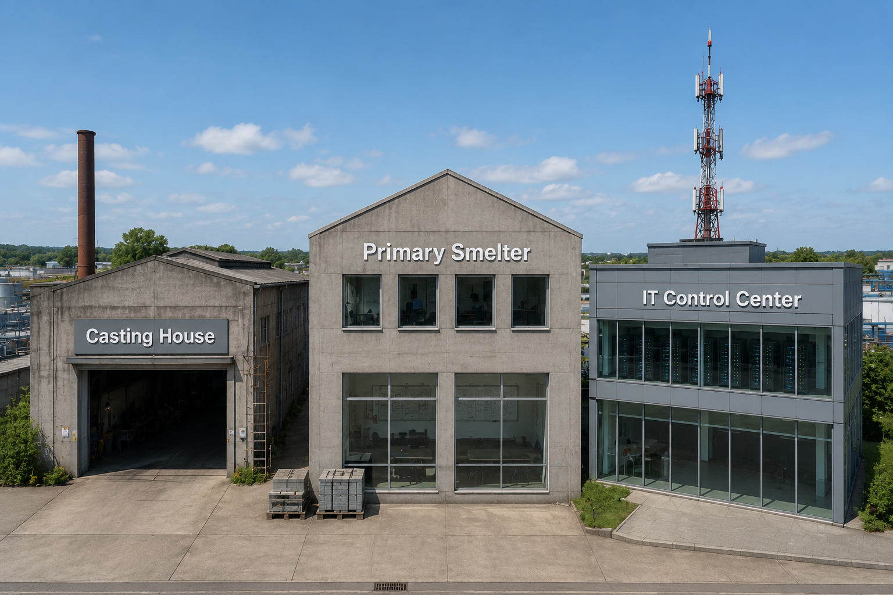

Before the attack of March 2019, Hydro was already one of the world's most integrated aluminum and renewable-energy companies, a global industrial giant rooted in Norway.

In the pre-dawn hours, a silent intruder began locking the digital heart of a global manufacturer. Reveal the incident.
Keep scrolling, and the attack reveals itself minute by minute. Click any event to expand what happened behind the scenes.
Scroll to reveal each moment of the attack, then click an event above for the full story.
Four pillars defined the response. Click a card to flip it and read how each was executed under pressure.
Explore the plant. Click a glowing hotspot to uncover the continuity measure that kept metal flowing. Close it before opening another.

Text
A clear chain of command turned chaos into coordination. Expand the organization, then click any role to open its mandate.
Hydro's recovery mirrors the PDCA cycle. Step through Plan, Do, Check, and Act, and one phase lights up at a time.
Recovery followed a deliberate sequence. Watch the flow connect, then click any step to expand it.
Select a step above to reveal how Hydro navigated each phase of recovery.
Six strategies formed Hydro's resilience stack. Hover for a glow, click to expand any strategy full-screen.
Every cyber incident teaches something.
Test your understanding of how Norsk Hydro responded to the LockerGoga attack. Pick the best answer for each question.
Business Continuity Works When It Is Planned, Tested, and Continuously Improved.